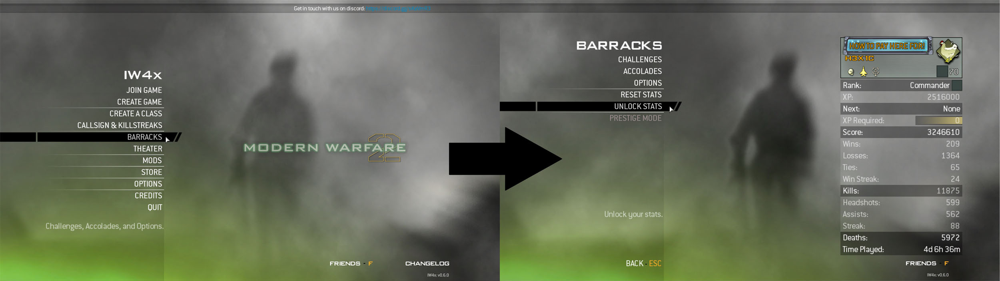

IW4x has a built in menu item to instantly Unlock All, this process is very similar in nature to challenge lobbies that you may or may not encountered on Steam MW2 or on consoles. It will grant you the max level (10th Prestige, Level 70) with everything unlocked. This includes all class slots, all weapons, all camos, all perks with pro variants, all titles, all emblems, all killstreaks and all challenges unlocked. This ideal for users coming back to the series who were previously max rank and don't want to do it all again or if you are new to the game and just don't fancy putting the grind in.
This section is slightly more advanced and requires you to enter some console commands to fine tune what rank you desire. Also note that it would be wise to make a backup of your stats stats file prior to entering any commands if you value your current unlocks, skip this if you don't mind losing your current stats. See the background information section to learn where your stats are stored.
The following command allows you to set any prestige you like from 0 (No prestige) to 10th prestige (The max prestige), or even use a prestige higher such as 11th prestige (Invisible prestige icon).
Enter this command from the main menu, Example command:
\setPlayerData prestige 9
The above example command sets your prestige to 9th prestige.
Your level is determined by your experience points, so to set a custom level you must enter the corresponding experience points. The range of rank 0-70 in experience points is 0 - 2434700,
with 2434700 experience == Level 70. Example:
\setPlayerData experience 2434700
The above example command sets your rank to level 70.
The previously two mentioned commands only set your level and prestige, they do not effect your unlocks. You may wish to first unlock all using the in-game menu item and then procede to set your rank to your liking (Yes you can derank yourself for example to say 8th prestige after unlocking all).
Everything related to player progression so your class names, class setups, current title/emblem, name, rank, unlocks are all stored in one file, this file is stored in the players folder of your MW2 directory. All user data is stored in the players folder such as config files, demos and as mentioned stats file.